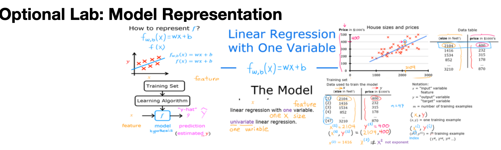

Code
import numpy as np
import matplotlib.pyplot as plt
#plt.style.use('./deeplearning.mplstyle')This Regression model representation is part of DeepLearning.AI course: Machine Learning Specialization / Course 1: Supervised Machine Learning: Regression and Classification In this course we will learn the difference between supervised and unsupervised learning and regression and classification tasks. Develop a linear regression model. Understand and implement the purpose of a cost function. Understand and implement gradient descent as a machine learning training method.
This is my learning experience of data science through DeepLearning.AI. These repository contributions are part of my learning journey through my graduate program masters of applied data sciences (MADS) at University Of Michigan, DeepLearning.AI, Coursera & DataCamp. You can find my similar articles & more stories at my medium & LinkedIn profile. I am available at kaggle & github blogs & github repos. Thank you for your motivation, support & valuable feedback.
These include projects, coursework & notebook which I learned through my data science journey. They are created for reproducible & future reference purpose only. All source code, slides or screenshot are intellectual property of respective content authors. If you find these contents beneficial, kindly consider learning subscription from DeepLearning.AI Subscription, Coursera, DataCamp

In this lab course you will: - Learn to implement the model \(f_{w,b}\) for linear regression with one variable
Here is a summary of some of the notation you will encounter.
|General
Notation | Description
| Python (if applicable) | |: ————|: ————————————————————|| | \(a\) | scalar, non bold || | \(\mathbf{a}\) | vector, bold || | Regression | | | | | \(\mathbf{x}\) | Training Example feature values (in this lab - Size (1000 sqft)) |
x_train | | \(\mathbf{y}\) | Training Example targets (in this lab Price (1000s of dollars)) | y_train | \(x^{(i)}\), \(y^{(i)}\) | \(i_{th}\)Training Example | x_i, y_i| | m | Number of training examples | m| | \(w\) | parameter: weight | w | | \(b\) | parameter: bias | b | | \(f_{w,b}(x^{(i)})\) | The result of the model evaluation at \(x^{(i)}\) parameterized by \(w,b\): \(f_{w,b}(x^{(i)}) = wx^{(i)}+b\) | f_wb |
import numpy as np
import matplotlib.pyplot as plt
#plt.style.use('./deeplearning.mplstyle')
As in the lecture, you will use the motivating example of housing price prediction. This lab will use a simple data set with only two data points - a house with 1000 square feet(sqft) sold for \$300,000 and a house with 2000 square feet sold for \$500,000. These two points will constitute our data or training set. In this lab, the units of size are 1000 sqft and the units of price are 1000s of dollars.
| Size (1000 sqft) | Price (1000s of dollars) |
|---|---|
| 1.0 | 300 |
| 2.0 | 500 |
You would like to fit a linear regression model (shown above as the blue straight line) through these two points, so you can then predict price for other houses - say, a house with 1200 sqft.
Please run the following code cell to create your x_train and y_train variables. The data is stored in one-dimensional NumPy arrays.
# x_train is the input variable (size in 1000 square feet)
# y_train is the target (price in 1000s of dollars)
x_train = np.array([1.0, 2.0])
y_train = np.array([300.0, 500.0])
print(f"x_train = {x_train}")
print(f"y_train = {y_train}")x_train = [1. 2.]
y_train = [300. 500.]mYou will use m to denote the number of training examples. Numpy arrays have a .shape parameter. x_train.shape returns a python tuple with an entry for each dimension. x_train.shape[0] is the length of the array and number of examples as shown below.
# m is the number of training examples
print(f"x_train.shape: {x_train.shape}")
m = x_train.shape[0]
print(f"Number of training examples is: {m}")x_train.shape: (2,)
Number of training examples is: 2One can also use the Python len() function as shown below.
# m is the number of training examples
m = len(x_train)
print(f"Number of training examples is: {m}")Number of training examples is: 2x_i, y_iYou will use (x\(^{(i)}\), y\(^{(i)}\)) to denote the \(i^{th}\) training example. Since Python is zero indexed, (x\(^{(0)}\), y\(^{(0)}\)) is (1.0, 300.0) and (x\(^{(1)}\), y\(^{(1)}\)) is (2.0, 500.0).
To access a value in a Numpy array, one indexes the array with the desired offset. For example the syntax to access location zero of x_train is x_train[0]. Run the next code block below to get the \(i^{th}\) training example.
i = 0 # Change this to 1 to see (x^1, y^1)
x_i = x_train[i]
y_i = y_train[i]
print(f"(x^({i}), y^({i})) = ({x_i}, {y_i})")(x^(0), y^(0)) = (1.0, 300.0)You can plot these two points using the scatter() function in the matplotlib library, as shown in the cell below. - The function arguments marker and c show the points as red crosses (the default is blue dots).
You can use other functions in the matplotlib library to set the title and labels to display
# Plot the data points
plt.scatter(x_train, y_train, marker='x', c='r')
# Set the title
plt.title("Housing Prices")
# Set the y-axis label
plt.ylabel('Price (in 1000s of dollars)')
# Set the x-axis label
plt.xlabel('Size (1000 sqft)')
plt.show()
 As described in lecture, the model function for linear regression (which is a function that maps from
As described in lecture, the model function for linear regression (which is a function that maps from x to y) is represented as
\[ f_{w,b}(x^{(i)}) = wx^{(i)} + b \tag{1}\]
The formula above is how you can represent straight lines - different values of \(w\) and \(b\) give you different straight lines on the plot.
Let’s try to get a better intuition for this through the code blocks below. Let’s start with \(w = 100\) and \(b = 100\).
Note: You can come back to this cell to adjust the model’s w and b parameters
w = 100
b = 100
print(f"w: {w}")
print(f"b: {b}")w: 100
b: 100Now, let’s compute the value of \(f_{w,b}(x^{(i)})\) for your two data points. You can explicitly write this out for each data point as -
for \(x^{(0)}\), f_wb = w * x[0] + b
for \(x^{(1)}\), f_wb = w * x[1] + b
For a large number of data points, this can get unwieldy and repetitive. So instead, you can calculate the function output in a for loop as shown in the compute_model_output function below. > Note: The argument description (ndarray (m,)) describes a Numpy n-dimensional array of shape (m,). (scalar) describes an argument without dimensions, just a magnitude. > Note: np.zero(n) will return a one-dimensional numpy array with \(n\) entries
def compute_model_output(x, w, b):
"""
Computes the prediction of a linear model
Args:
x (ndarray (m,)): Data, m examples
w,b (scalar) : model parameters
Returns
y (ndarray (m,)): target values
"""
m = x.shape[0]
f_wb = np.zeros(m)
for i in range(m):
f_wb[i] = w * x[i] + b
return f_wbtmp_f_wb = compute_model_output(x_train, w, b,)
# Plot our model prediction
plt.plot(x_train, tmp_f_wb, c='b',label='Our Prediction')
# Plot the data points
plt.scatter(x_train, y_train, marker='x', c='r',label='Actual Values')
# Set the title
plt.title("Housing Prices")
# Set the y-axis label
plt.ylabel('Price (in 1000s of dollars)')
# Set the x-axis label
plt.xlabel('Size (1000 sqft)')
plt.legend()
plt.show()
Now that we have a model, we can use it to make our original prediction. Let’s predict the price of a house with 1200 sqft. Since the units of \(x\) are in 1000’s of sqft, \(x\) is 1.2.
w = 200
b = 100
x_i = 1.2
cost_1200sqft = w * x_i + b
print(f"${cost_1200sqft:.0f} thousand dollars")$340 thousand dollarsIn this lab you have learned: - Linear regression builds a model which establishes a relationship between features and targets - In the example above, the feature was house size and the target was house price - for simple linear regression, the model has two parameters \(w\) and \(b\) whose values are ‘fit’ using training data. - once a model’s parameters have been determined, the model can be used to make predictions on novel data.